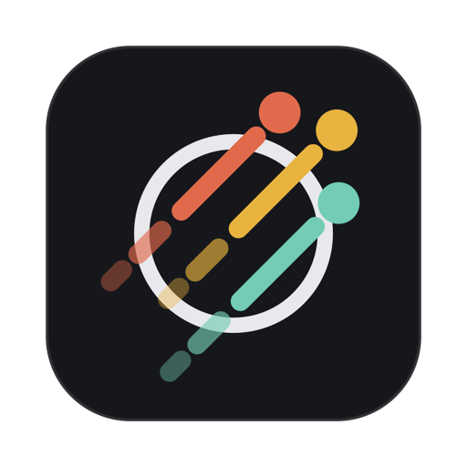

NeutrinoPrivacy Policy
Neutrino does not collect any data.
Last updated November 5, 2026.
The app
Neutrino stores your tasks and notes as files on your Mac, in a location you control. The app has no accounts, no analytics, no advertising and no tracking, and it does not send your tasks, your notes or any other information to us or to anyone else.
If you choose to keep your files in a folder synced by a service such as iCloud Drive, Google Drive or Dropbox, that service handles them under its own privacy policy. Neutrino itself only reads and writes the files on your Mac. When you open a link you've kept, it opens in your web browser like any other link.
This website
This site has no cookies, analytics or trackers. It is hosted by GitHub Pages, which, like any web host, receives your IP address when you load a page; see GitHub's privacy statement for how that is handled.
If you email us, we use your address and message only to reply to you.